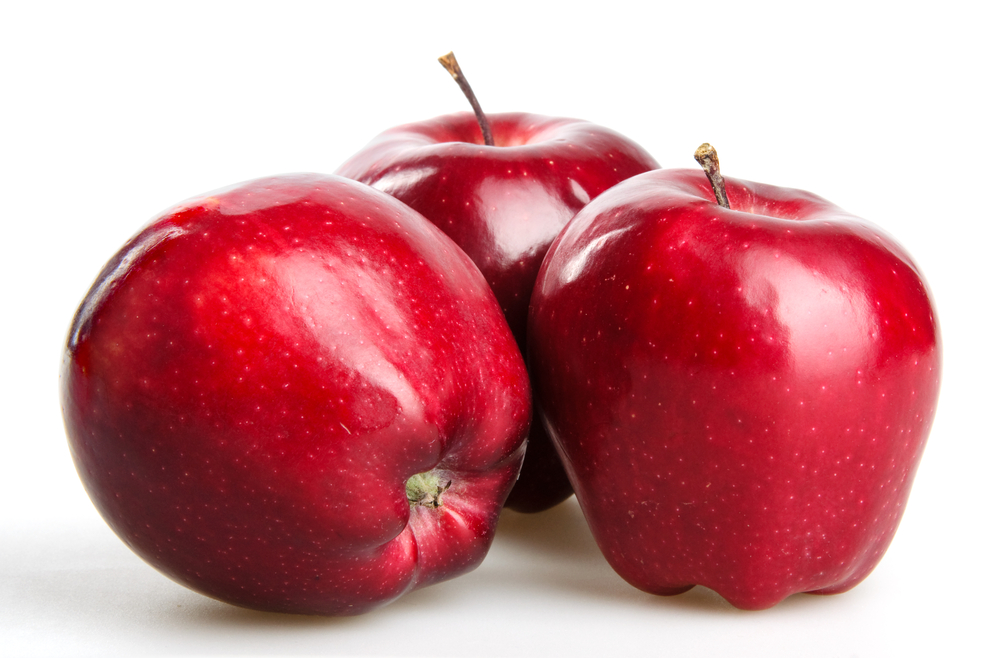

Яблоко — плод яблони, который употребляется в пищу в свежем виде, служит сырьём в кулинарии и для приготовления напитков. Считается, что родиной ябло ни является Центральная Азия. Наибольшее распространение получила яблоня домашняя. На сегодняшний день существует множество сортов этого вида яблони, произрастающих в различных климатических условиях.